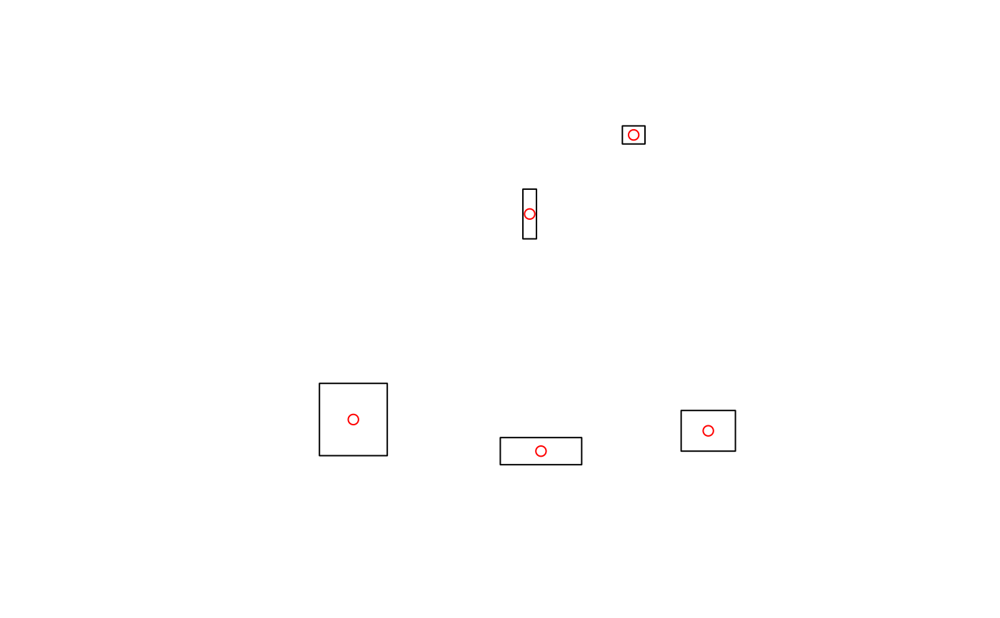
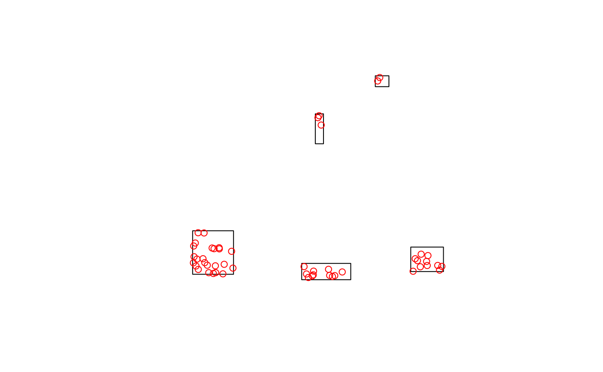
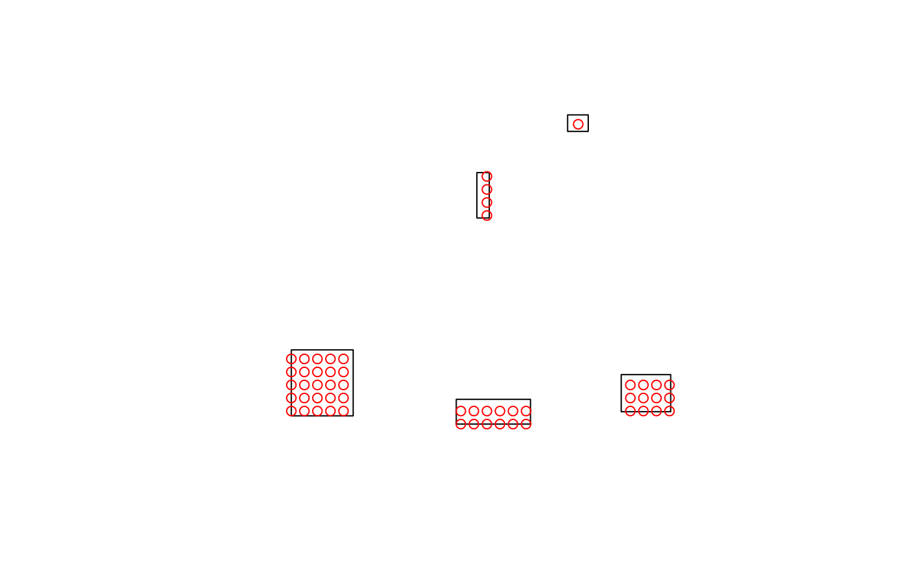

Generate landing points inside polygons representing harvested area. There
are three different sampling types available: "centroid" is the default and
will return the centroid or a point that is inside the polygon if the
centroid is not (see st_point_on_surface); "random" takes a
random sample based on the given landingDens see
(st_sample); "regular" intersects the polygons with a
regular grid with cell size sqrt(1/landingDens), if a polygon does not
intersect with the grid its centroid is used.
getLandingsFromTarget(harvest, landingDens = NULL, sampleType = "centroid")sf, SpatialPolygons or RasterLayer object with harvested areas. If it is a RasterLayer with more than one unique value other than 0 each value will be run separately which will produce different results from a 0/1 raster but will be much slower.
number of landings per unit area. This should be in the same units as the CRS of the harvest. Note that 0.001 points per m2 is > 1000 points per km2 so this number is usually very small for projected CRS.
character. "centroid" (default), "regular" or "random".
Centroid returns one landing per harvest block, which is guaranteed to be
in the harvest block for sf objects but not for rasters. Regular returns
points from a grid with density landingDens that overlap the
harvested areas. Random returns a random set of points from each polygon
where the number is determined by the area of the polygons and
landingDens. If harvest is a raster the centroid is always
returned as one of the landings to ensure all harvest areas get at least
one landing.
an sf simple feature collection with an ID column and POINT geometry
Note that the landingDens is in points per unit area where the unit of
area is determined by the CRS. For projected CRS this should likely be a very
small number i.e. < 0.001.
# Get centroid
outCent <- getLandingsFromTarget(demoScen[[1]]$landings.poly)
raster::plot(demoScen[[1]]$landings.poly)
plot(outCent, col = "red", add = TRUE)

# Get random sample with density 0.1 points per unit area
outRand <- getLandingsFromTarget(demoScen[[1]]$landings.poly, 0.1, sampleType = "random")
raster::plot(demoScen[[1]]$landings.poly)
plot(outRand, col = "red", add = TRUE)

# Get regular sample with density 0.1 points per unit area
outReg <- getLandingsFromTarget(demoScen[[1]]$landings.poly, 0.1, sampleType = "regular")
raster::plot(demoScen[[1]]$landings.poly)
plot(outReg, col = "red", add = TRUE)
